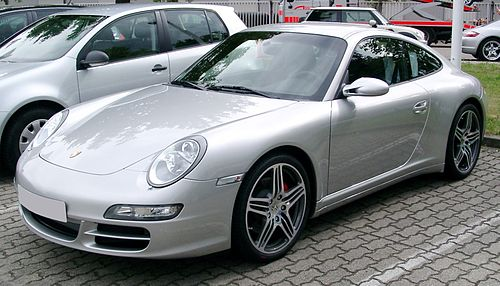

Porsche to niemiecki producent luksusowych samochodów sportowych, założony w 1931 roku przez Ferdynanda Porsche.
Siedziba firmy znajduje się w Stuttgarcie. Firma jest ikoną motoryzacji, znaną z modeli takich jak 911, Cayenne,
Panamera czy Macan.
Kluczowe informacje:
Główna działalność: Produkcja wysokiej klasy samochodów sportowych, SUV-ów i sedanów.
Filozofia: Połączenie sportowych osiągów z codzienną użytecznością i eleganckim designem.
Macierz: Firma jest częścią grupy Volkswagen AG.
Wpływy w Branży Wojskowej (Czołgi)
Ferdynand Porsche już przed i podczas II wojny światowej angażował się w projekty zbrojeniowe dla III Rzeszy.
Najsłynniejsze projekty to:
Czołg Tiger (P) / VK 45.01 (P): Bezpośredni konkurent czołgu Henschel w konkursie na ciężki czołg Tiger. Czołg
Porsche (oznaczony "P") wykorzystywał innowacyjny, ale awaryjny napęd elektryczny. Chociaż do produkcji seryjnej
wybrano projekt Henschela, zbudowano kilka kadłubów, które później przerobiono na działa pancerne
Elefant/Ferdinand.
Superciężki Czołg Maus („Mysz”): Był to ogromny, eksperymentalny czołg ważący prawie 190 ton, zaprojektowany
przez zespół pod kierownictwem Porsche. Zbudowano tylko dwa prototypy, które nie weszły do produkcji seryjnej.
Podsumowanie: Działalność wojskowa Porsche w tamtym okresie, choć technologicznie zaawansowana, nie odniosła
sukcesu w masowej produkcji, w przeciwieństwie do jego późniejszych osiągnięć w motoryzacji cywilnej. Stanowi
jednak istotny, choć kontrowersyjny, rozdział w historii firmy.
auto1
Link do auta 2
Panzerkampfwagen VIII Maus
Maus (niem. „mysz”) to niemiecki, superciężki czołg z okresu II wojny światowej, zaprojektowany pod
kierownictwem Ferdinanda Porsche. Był to najcięższy czołg kiedykolwiek zbudowany w postaci ukończonego
prototypu.
Kluczowe cechy:
Masa: Ok. 188 ton, co czyniło go praktycznie niezniszczalnym dla standardowej broni pancernej
przeciwnika, ale także niezwykle powolnym i obciążającym dla mostów oraz dróg.
Uzbrojenie: Potężne działo 128 mm oraz drugie działo 75 mm w jednej wieży. Jego pancerz był niezwykle
gruby (do 240 mm).
Napęd: Napędzany był silnikiem spalinowym podłączonym do generatora, który zasilał silniki elektryczne
poruszające gąsienice (napęd elektryczny). Rozwiązanie to było innowacyjne, ale awaryjne.
Przeznaczenie: Miał przełamywać silnie ufortyfikowane linie obronne.
Historia i efekt:
Projekt był ogromnym obciążeniem dla niemieckiego przemysłu. Zbudowano tylko dwa niekompletne prototypy.
Nie wzięły one udziału w walce, a ich głównym problemem była ogromna masa i niska mobilność. Zostały
zniszczone przez Niemców pod koniec wojny, aby nie wpadły w ręce wroga.
Podsumowanie: „Maus” to symbol niemieckich „cudownych broni” (Wunderwaffe) – projekt technicznie
imponujący, lecz taktycznie i praktycznie bezużyteczny z powodu swoich ekstremalnych rozmiarów, kosztów
i ograniczeń. Dziś jest przedmiotem legendy i fascynacji miłośników broni pancernej.
Porsche 911
link do auta 1

Porsche 911 (997) - Szczegółowy Przegląd
Porsche 997 to szósta generacja legendarnego modelu 911, produkowana w latach 2004–2012. Jest
powszechnie uważana za jeden z najdoskonalszych i najbardziej "udanych" współczesnych 911, który po
eracji wodzonych modeli 996 powrócił do klasycznego designu i udoskonalił charakterystyczne cechy marki.
Najważniejsze Parametry Techniczne (na przykładzie wersji bazowych):
1. Porsche 911 Carrera (997.1)
Lata produkcji: 2004–2008
Silnik: 3.6-litrowy bokser (B6)
Moc: 325 KM (239 kW) przy 6800 obr./min
Moment obrotowy: 370 Nm przy 4250 obr./min
Skrzynia biegów: 6-biegowa manualna lub 5-biegowa Tiptronic S (automatyczna)
Prędkość maksymalna: ok. 285 km/h
Przyspieszenie 0-100 km/h: ok. 4,8 s (z opcją Sport Chrono)
2. Porsche 911 Carrera S (997.1)
Lata produkcji: 2004–2008
Silnik: 3.8-litrowy bokser (B6)
Moc: 355 KM (261 kW) przy 6600 obr./min
Moment obrotowy: 400 Nm przy 4600 obr./min
Skrzynia biegów: 6-biegowa manualna lub 5-biegowa Tiptronic S
Prędkość maksymalna: ok. 295 km/h
Przyspieszenie 0-100 km/h: ok. 4,6 s (z opcją Sport Chrono)
Kluczowe Cechy i Innowacje Generacji 997:
Powrót do korzeni designu: Po chłodno przyjętych "żabich oczach" modelu 996, generacja 997 przywróciła
okrągłe reflektory, co natychmiast spotkało się z entuzjastycznym przyjęciem fanów marki.
Elektronika i zawieszenie: Po raz pierwszy w podstawowym 911 pojawił się system Porsche Active
Suspension Management (PASM), który pozwalał na wybór pomiędzy miększym a sportowym ustawieniem
zawieszenia. Dostępny był także system Porsche Stability Management (PSM).
Facelifting (997.2 - 2008-2012): W 2008 roku model przeszedł gruntowną modernizację. Najważniejsze
zmiany to:
Wprowadzenie bezpośredniego wtrysku paliwa (DFI) do silników.
Zastąpienie automatycznej skrzyni Tiptronic S nowocześniejszą, 7-biegową skrzynią PDK (Doppelkupplung).
Wzmocnienie mocy (np. Carrera: 345 KM, Carrera S: 385 KM).
Drobne zmiany wizualne, m.in. w tylnych światłach.
Wersje specjalne: Na bazie 997 powstały kultowe i ekstremalne wersje, takie jak:
GT3 RS – wersja homologacyjna dla torów wyścigowych.
Turbo – z silnikiem 3.6l z podwójną turbosprężarką i mocą 480 KM.
GT2/GT2 RS – najlżejsza i najmocniejsza wersja z napędem na tylne koła, będąca szczytem możliwości
technicznych tej generacji.
Podsumowanie:
Porsche 997 to połączenie klasycznego, pięknego designu z nowoczesną i dopracowaną mechaniką. Dla wielu
purystów jest to ostatni "prawdziwy" 911, oferujący bezpośredni kontakt z samochodem przy jednoczesnym
wysokim poziomie komfortu i niezawodności.